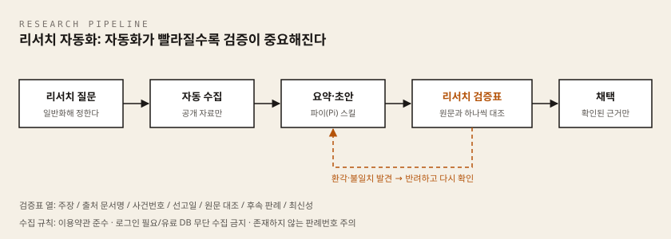

이 차시에서 준비할 것
시작 전에 아래 네 가지를 갖추면 이 차시를 혼자 끝까지 진행할 수 있습니다. 하나라도 없으면 옆의 설치가이드를 먼저 보고 오세요.
| 준비물 | 확인 방법 (30초) | 없다면 |
|---|---|---|
| Windows 노트북 기본 설정 | 시작 버튼 옆 검색창에 PowerShell을 치면 Windows PowerShell이 나온다 | 공통 준비 설치가이드 |
| 안티그래비티 등 AI 대화 도구 — 2차시에서 korean-law-mcp를 연결해 둔 바로 그 프로그램 | 그 프로그램을 열었을 때 새 대화 입력창이 보인다 | 안티그래비티 설치가이드 · Codex CLI 설치가이드 |
| korean-law-mcp (법제처 공식 데이터 연결) | 위 프로그램에서 korean-law 도구가 연결되어 있나요?라고 물었을 때 도구 목록을 답한다 | korean-law-mcp 설치가이드 |
| 파이(Pi) — 실습지 2단계용 | 파이 실행 화면이 뜬다 | 파이(Pi) 설치가이드 |
어느 프로그램에서 실습하나요. korean-law 도구는 2차시에서 연결한 그 프로그램 안에서만 보입니다. 다른 웹 챗(브라우저에서 쓰는 일반 AI 채팅)에서는 아무리 요청해도 나타나지 않습니다. 이 차시의 모든
korean-law실습은 그 프로그램에서 진행하세요.
추가로 웹 브라우저(엣지 또는 크롬) 하나와, 검증표를 적을 문서 파일 하나가 필요합니다. 문서는 메모장·워드·한글 무엇이든 좋습니다. 저장 위치는 C:\Users\이름\바탕 화면\AX실습 처럼 찾기 쉬운 폴더로 정해 두세요.
이 차시에 처음 나오는 말
| 용어 | 한 줄 설명 |
|---|---|
| 프롬프트 | AI에게 보내는 지시문. 우리가 입력창에 적어 넣는 글 전체를 말합니다. |
| 스킬 | 에이전트가 일할 때 펼쳐 보는 지시 문서. 사람으로 치면 업무 매뉴얼입니다. 3차시에서 만든 법률업무 지시서를 그대로 스킬로 씁니다. |
| 새 대화 | 앞의 대화 내용을 전혀 기억하지 못하는 빈 대화창. 교차 검증에 꼭 필요합니다. |
| 1차 자료 | 법령 원문·판결문처럼 근거의 출발점이 되는 공식 문서. 블로그·뉴스·AI 요약은 재인용 자료입니다. |
| 환각(할루시네이션) | AI가 존재하지 않는 조문·판례를 진짜처럼 지어내는 현상. |
| 검색증강생성(RAG) | 답을 만들기 전에 외부 자료를 검색해 함께 참고하게 하는 방식. 환각을 줄이지만 없애지는 못합니다. |
| 인용 추적 | 주장 하나하나를 그 근거가 된 원문 위치까지 따라가 확인할 수 있는 상태. |
| 최신성 | 그 자료가 지금 시점의 법령·판례 상태를 반영하는지 여부. |
| 실행 오류 자가 수정 프롬프트 | 실행이 실패했을 때 멈추지 말고 원인을 추정해 한 번 더 시도하라고 미리 적어 두는 지시. |
| 로봇 배제 정책(robots.txt) | 사이트가 "여기까지는 자동 수집해도 된다"를 적어 둔 규칙 파일. 넘으면 안 되는 선입니다. |
| MCP | AI가 외부 데이터나 프로그램을 직접 쓰게 해 주는 연결 규격. AI에 끼우는 어댑터라고 생각하면 됩니다. |
| korean-law-mcp | 법제처 국가법령정보센터의 공식 데이터를 AI가 직접 조회하게 해 주는 MCP 서버. |
| 도구 호출 | AI가 답을 쓰기 전에 외부 도구를 실제로 실행하는 것. 화면에 접힌 줄로 표시됩니다. |
| 인증키(OC 키) | 법제처 Open API를 쓰기 위해 발급받는 개인 열쇠 문자열. 문서에 적지 않고 설치가이드에서 정한 자리에만 보관합니다. |
- 과정: 변호사 AX 나노디그리
- 차시: 4차시 / 총 7차시
- 핵심 질문: 그럴듯한 답과 확인된 근거를 어떻게 구분하는가?
- 이번 차시 결과물: 리서치 검증표 1부
이 차시에서 배우는 것
리서치는 절차가 반복적이고 결과 형식이 정해져 있어 자동화 효과가 가장 큰 업무입니다. 동시에, AI가 존재하지 않는 판례번호나 원문에 없는 인용을 사실처럼 만들어내는 위험이 가장 커지는 업무이기도 합니다. 그래서 이번 차시는 두 가지를 한 쌍으로 배웁니다.
- 파이(Pi)에 자율형 법률 리서치 스킬을 붙여 공개 법령·판례 자료를 자동 수집·요약하는 리서치 자동화 AI 에이전트를 만들고, 실행 오류가 나면 스스로 수정을 시도하게 만드는 방법
- 환각과 검색증강생성의 한계를 이해하고, 자동 수집이 허용되는 자료와 금지되는 자료를 구분하는 기준
- 자동화 결과의 각 주장을 1차 자료 원문과 대조해 리서치 검증표를 작성하는 방법
이번 차시를 관통하는 문장은 하나입니다. 리서치 자동화의 목표는 답을 빨리 받는 것이 아니라, 확인된 근거에 빨리 도달하는 것입니다.
개념 익히기
1차 자료
법령 원문, 판결문처럼 근거의 출발점이 되는 공식 문서를 1차 자료라고 부릅니다. 블로그 글, 뉴스 기사, AI의 요약처럼 1차 자료를 다시 옮겨 적은 문서는 재인용 자료입니다. 재인용 자료는 리서치의 실마리는 될 수 있어도, 결론의 근거가 되지는 못합니다. 최종 확인은 언제나 1차 자료에서 합니다.
환각
AI는 근거가 없거나 틀린 내용을 사실처럼 생성할 수 있습니다. 이것을 환각이라고 부릅니다. 0000다00000처럼 형식은 완벽하지만 실제로는 존재하지 않는 사건번호가 만들어질 수 있고, 원문에 없는 문장이 실제 인용처럼 붙어 나올 수 있습니다. 환각은 드문 고장이 아니라 생성 방식 자체에서 나오는 상시 위험입니다. 자신감 있는 문체, 그럴듯한 형식, 반복된 답변은 정확성의 증거가 아닙니다.
검색증강생성(RAG)
검색증강생성은 답을 만들기 전에 외부 자료를 검색해 답변 생성에 함께 제공하는 방식입니다. 두 방식을 비교하면 다음과 같습니다.
| 방식 | 하는 일 | 남는 위험 |
|---|---|---|
| 일반 생성 | 학습된 지식으로 답을 만든다 | 근거 없는 환각, 오래된 정보 |
| 검색증강생성(RAG) | 외부 자료를 검색해 답변 생성에 함께 제공한다 | 잘못 검색된 문서, 원문과 다른 요약 |
검색증강생성은 근거 문서를 함께 제공해 환각을 줄이지만, 없애지는 못합니다. 검색된 문서가 최신인지, 지금 다루는 쟁점의 맥락에 맞는지는 별도로 확인해야 합니다.
이번 차시에서 쓰는 korean-law-mcp도 이 원리 위에 있습니다. 법제처 공식 데이터를 직접 조회해 오므로 근거가 훨씬 단단해지지만, 조회 결과를 요약하는 것은 여전히 AI입니다. 그래서 도구를 쓴 답변도 검증 대상에서 빠지지 않습니다.
인용 추적
각 주장과 그 근거가 된 원문 위치를 연결해 확인할 수 있는 상태를 인용 추적이라고 부릅니다. 출처 링크가 붙어 있다는 것은 인용 추적의 시작일 뿐입니다. 원문을 열어 해당 부분을 직접 대조해야 인용 추적이 완성됩니다. 인용 추적이 안 되는 주장은 근거가 없는 것으로 취급합니다.
최신성
자료가 현재의 법령·판례 상태를 반영하는지를 최신성이라고 부릅니다. 모델의 학습 시점과 서비스의 검색 시점은 서로 다를 수 있으므로, 최신성은 수집한 시점이 아니라 사용하는 시점을 기준으로 확인합니다. 법령이라면 개정·시행일을, 판례라면 이후 변경·폐기된 후속 판례가 있는지를 봅니다.
자동화는 오류도 빠르게 복제한다
사람이 한 번 실수하면 문서 하나가 틀립니다. 그러나 자동화된 흐름 안에서 생긴 오류는 사람보다 빠르게 여러 문서로 복제되어 흐름 전체를 오염시킵니다. 자동화 속도가 빨라질수록 검증은 선택이 아니라 필수가 되는 이유입니다. 하나의 환각이 발견되면 그 옆의 결과도 의심하는 것이, 자동화 시대의 검증 습관입니다.
리서치 자동화의 원리

파이(Pi)에 리서치 스킬을 붙입니다
이번 실습에서는 파이(Pi)에 자율형 법률 리서치 스킬을 붙여, 공개 법령·판례 자료의 수집과 요약을 맡깁니다. 3차시에 만든 법률업무 지시서를 스킬 형태로 옮기는 작업이라고 이해하시면 됩니다. 지시서에 있던 목적, 자료 범위, 금지사항, 출력 형식이 그대로 스킬의 뼈대가 됩니다.
리서치 스킬에는 다섯 항목이 들어갑니다.
- 목적: 무엇에 관한 근거를 찾는가
- 수집 범위: 종합법률정보 등 허용된 공개 출처만
- 결과 형식: 주장, 출처 문서명, 사건번호, 선고일을 갖춘 표
- 금지사항: 출처 없는 주장 금지, 로그인·유료 자료 접근 금지
- 기록: 수집 일시와 출처 주소를 함께 남긴다
다섯 항목을 채운 실행 프롬프트 원문은 아래와 같습니다. 파이(Pi)에 그대로 붙여 넣고, 대괄호 부분만 자신의 주제로 바꾸면 됩니다.
당신은 법률 리서치 보조입니다. 아래 규칙을 지키며 조사하세요. 목적: [주제 — 예: 임대차보증금 반환 지연 시 지연이자 기준]에 관한 공개된 법령·판례 근거를 찾는다. 수집 범위: 종합법률정보 등 공개 무료 출처만 사용한다. 로그인·유료 자료에는 접근하지 않는다. 로봇 배제 정책(robots.txt)과 이용약관을 준수한다. 결과 형식: 아래 표로 정리한다. | 주장 | 출처 문서명 | 사건번호/법령 조항 | 선고일/시행일 | 출처 주소 | 수집 일시 | 금지사항: - 출처를 제시할 수 없는 주장은 표에 넣지 않는다. - 원문에서 확인하지 못한 내용은 "미확인"으로 표시한다. - 승소 가능성이나 결론을 단정하지 않는다. 완료 기준: 근거 5건 이상을 표로 정리하면 멈추고 보고한다.
한 가지 미리 알아 둘 것이 있습니다. 파이의 기본 도구는 read(읽기)·write(만들기)·edit(수정)·bash(명령 실행) 네 가지이고, 웹을 열어 보는 도구는 기본으로 들어 있지 않습니다. 그래서 위 프롬프트를 넣으면 파이가 "웹에 접근할 수 없습니다"라고 답할 수 있습니다.
그럴 때는 역할을 나눕니다. 자료 수집은 AI 대화 도구가 하고, 파이는 그 결과를 읽어 표로 정리하는 일(read → write)을 맡습니다. 수집한 응답을 리서치원본.txt로 저장해 파이에게 읽히는 이 경로가 실습지 2단계 5)에 절차로 적혀 있습니다.
아래 실습지 2단계에는 이 뼈대를 오늘 실습용으로 미리 채워 넣은 완성형 프롬프트가 준비되어 있습니다. 지금은 다섯 항목이 어떻게 문장이 되는지만 눈에 익혀 두시면 됩니다.
실행 오류는 스스로 고치게 합니다
실행이 실패했을 때 멈춰서 사람을 기다리는 대신, 오류 내용을 읽고 원인을 추정해 한 번 더 시도하게 만드는 지시를 실행 오류 자가 수정 프롬프트라고 부릅니다. 여기에는 세 가지 규칙이 필요합니다.
- 오류 메시지를 요약하고 추정 원인을 기록한 뒤 수정을 시도한다.
- 같은 오류로 3회 실패하면 중단하고 사람에게 보고한다.
- 수집 범위와 금지사항은 수정 대상에서 제외한다. 오류를 고치기 위해 금지선을 넘지 않는다.
자가 수정 프롬프트 원문은 아래와 같습니다. 위 리서치 프롬프트 뒤에 이어 붙이되, 파이 입력창에서 두 번 나눠 보내면 안 됩니다. 메모장에서 하나로 합친 뒤 한 번에 붙여넣는 방법은 실습지 2단계 4)에 있습니다.
실행 중 오류가 나면 다음 절차를 따르세요. 1. 오류 메시지를 한 줄로 요약하고, 추정 원인을 한 줄로 기록한다. 2. 원인을 고친 방법을 한 줄로 기록한 뒤 다시 시도한다. 3. 같은 오류가 3회 반복되면 즉시 중단하고, 지금까지의 오류 요약·추정 원인·시도한 수정 목록을 보고한다. 4. 수집 범위와 금지사항은 어떤 경우에도 바꾸지 않는다. 접근이 막힌 자료는 우회하지 말고 "접근 불가"로 기록한다.
두 가지를 기억해 주세요. 첫째, 자가 수정은 실행 오류를 고치는 장치이지 내용의 정확성을 보장하는 장치가 아닙니다. 실행이 성공했다는 것과 결과가 맞다는 것은 별개입니다. 둘째, 무한 재시도는 오류를 고치는 것이 아니라 반복하는 것입니다. 중단 조건이 반드시 필요하고, 에이전트가 스스로 고치는 범위가 넓어질수록 넘지 말아야 할 선은 더 명확하게 적어야 합니다.
수집 시 지켜야 할 것
에이전트는 시키면 어디든 접근을 시도합니다. 어디까지 가도 되는지는 도구가 아니라 우리가 정해야 합니다. 실습 스킬에는 수집 대상을 공개 자료로 한정하는 규칙을 처음부터 적어 넣습니다.
수집해도 되는 자료
- 종합법률정보 등 공개된 법령·판례 자료
- 이용약관과 로봇 배제 정책이 자동 접근을 허용하는 범위
- 수업에서 제공된 실습용 샘플 자료
수집하면 안 되는 자료
- 로그인이 필요한 서비스의 내부 자료
- 유료 데이터베이스의 무단 수집
- 이용약관이나 로봇 배제 정책이 금지한 접근
이 구분은 실습이 끝난 뒤 실무에서도 그대로 적용됩니다. 자동 수집의 허용 범위는 기술로 정해지는 것이 아니라, 대상 사이트의 이용약관과 로봇 배제 정책, 그리고 우리가 스킬에 적어 넣은 금지선으로 정해집니다.
리서치 검증표 사용법
리서치 검증표는 자동화 결과의 주장 하나마다 한 줄씩 채우는 표입니다. 열 구성은 다음과 같습니다.
| 열 | 적을 내용 |
|---|---|
| 주장 요지 | 결과물에서 근거로 쓰인 문장 |
| 출처 문서명 | 법령명 또는 판결문 등 1차 자료 이름 |
| 사건번호 | 원문에서 확인한 사건번호 |
| 선고일 | 원문에서 확인한 선고일 |
| 원문 대조 여부 | 해당 부분을 직접 확인했는지 |
| 후속 판례 확인 여부 | 이후 변경·폐기된 판례가 있는지 확인했는지 |
| 최신성 판단 | 사용 가능 / 보류 / 폐기 |
작성할 때 지킬 원칙은 세 가지입니다.
- 요약을 다시 읽는 것은 검증이 아닙니다. 원문을 열어 해당 부분을 직접 본 경우에만 원문 대조 열에 확인 표시를 합니다.
- 한 열이라도 비어 있으면 그 주장은 아직 사용할 수 없는 근거입니다.
- 검증표는 통과 기록이 아니라, 무엇을 걸러냈고 무엇이 보류 중인지 남기는 작업 기록입니다.
보류나폐기가 나오는 것은 실패가 아니라 검증이 작동했다는 증거입니다.
검증에 실패한 주장은 이렇게 처리합니다.
- 사건번호가 검색되지 않는다 → 즉시 폐기하고, 같은 스킬이 만든 다른 결과도 다시 봅니다.
- 인용이 원문과 다르다 → 해당 주장을 반려하고 원문 문장으로 교체합니다.
- 후속 판례를 확인하지 못했다 → 보류로 표시하고, 확인 전에는 문서에 쓰지 않습니다.
스스로 해보기
아래는 AI가 내놓을 법한 그럴듯한 리서치 답변의 예시입니다. 정답을 찾는 대신, 검증표를 채우기 전에 어느 지점을 의심하고 무엇을 확인해야 할지 스스로 표시해 보세요.
임대차 계약 갱신 요건에 관하여 대법원은 0000다00000 판결(0000년 0월 0일 선고)에서 "계약 갱신의 요건은 당사자의 명시적 의사표시에 한정되지 않는다"고 판시하였습니다. 이 법리는 이후 판례에서도 일관되게 유지되고 있으며, 관련 법령 역시 같은 취지로 개정되었습니다.
생각해 볼 질문입니다.
- 이 답변에서 1차 자료로 직접 확인해야 할 항목은 몇 개이고, 각각 무엇입니까?
- 따옴표 안의 인용 문장이 원문에 실제로 있는지, 어떻게 확인하겠습니까?
- "일관되게 유지되고 있으며"라는 문장과 "같은 취지로 개정되었습니다"라는 문장은 각각 검증표의 어느 열과 연결됩니까?
- 사건번호가 공식 출처에서 검색되지 않는다면, 이 답변의 나머지 부분은 어떻게 다루겠습니까?
이 질문들에 대한 확인을 마치기 전까지, 위 답변은 아직 근거가 아니라 확인 대상입니다.
실습: 리서치 검증표 만들기
실습은 아래 4차시 실습지의 순서를 따라 진행합니다. 채운 결과는 lawyer-ax-worksheet-04-research-verification.md라는 이름으로 저장하기를 권합니다. 전체 흐름을 요약하면 다음과 같습니다.
- 리서치 질문 정하기: 실제 사건의 쟁점 대신
계약 해석의 일반 기준처럼 일반화된 연구 질문 하나를 정하고, 검색 키워드를 적습니다. - 파이(Pi)로 리서치 스킬 실행하기: 화면에 안내된 명령만 사용해 스킬을 실행하고, 허용한 공개 출처와 금지사항, 실행 과정을 기록합니다. 오류가 났다면 실행 오류 자가 수정 프롬프트가 어떻게 작동했는지도 기록합니다.
- 결과 분해하기: 스킬이 만든 요약에서 근거로 쓰인 주장 다섯 개를 골라, 판단 없이 그대로 옮겨 적고 출처 존재 여부를 확인합니다.
- 리서치 검증표 완성하기: 확인할 수 있는 주장부터 원문을 열어 직접 대조하고, 검증표의 모든 열을 채웁니다.
- 환각 사례 기록하기: 원문과 다르거나 존재하지 않는 인용을 발견했다면 어떻게 알아차렸고 어떻게 처리했는지 기록합니다. 발견하지 못했다면 없다고 판단한 확인 방법을 적습니다.
실습 규칙을 다시 확인해 주세요. 공개된 법령·판례 자료만 수집하고, 로그인이 필요한 서비스나 유료 데이터베이스는 무단으로 수집하지 않으며, 대상 사이트의 이용약관과 로봇 배제 정책을 준수합니다. 공개 판결문의 판례번호는 출처 확인을 위해 기록할 수 있지만, 의뢰인의 진행 사건번호·사무소 내부 접수번호는 기록하지 않습니다. 가상 예시는 0000다00000 형식을 씁니다.
에이전트가 얼마나 많이 찾았는지가 아니라, 여러분이 무엇을 걸러냈는지가 이번 실습의 성과입니다.
스스로 점검
아래 문장을 완성해 보세요.
- 오늘 검증표에서 내가 걸러낸 오류는 ________입니다.
- 내 리서치 스킬이 넘지 않도록 정한 수집 금지선은 ________입니다.
- 자동화 결과를 문서에 쓰기 전에 내가 반드시 확인할 한 가지는 ________입니다.
결과물 저장 파일명. 이 실습지를 채운 결과는
lawyer-ax-worksheet-04-research-verification.md로 저장하기를 권합니다..md는 마크다운(표와 제목을 글자 기호로만 적는 간단한 문서 형식) 파일의 확장자입니다. 메모장에서 저장할 때 [파일] → [다른 이름으로 저장] → 파일 형식을모든 파일로 바꾸고 파일 이름에 확장자까지 그대로 입력하면 됩니다. 워드·한글로 작업했다면 확장자는 그대로 두고 파일 이름만lawyer-ax-worksheet-04-research-verification으로 맞춰 두세요. 차시마다lawyer-ax-worksheet-0N-...형식으로 이름을 통일해 한 폴더에 모아 두면 나중에 찾기 쉽습니다.
실습 목표
파이(Pi)의 자율형 법률 리서치 스킬과 korean-law-mcp로 공개 법령·판례 자료를 자동 수집·요약하고, 그 결과의 주장 하나하나를 원문과 대조해 리서치 검증표 1부를 완성합니다.
실습 규칙
- 공개된 법령·판례 자료만 수집합니다.
- 로그인이 필요한 서비스나 유료 데이터베이스는 무단으로 수집하지 않습니다.
- 대상 사이트의 이용약관과 로봇 배제 정책을 준수합니다.
- 실제 사건의 쟁점 대신
계약 해석의 일반 기준처럼 일반화된 연구 질문을 사용합니다. - 공개 판결문을 검증할 때는 공개된 판례번호를 근거로 기록해도 됩니다. 다만 의뢰인의 진행 사건번호·사무소 내부 접수번호는 적지 않으며, 가상 예시에는
0000다00000형식을 사용합니다. - 의뢰인 이름 자리에는
김가상,의뢰인 A같은 가상 이름만 씁니다. - 인증키는 이 실습지에 적지 않습니다. 보관 위치만 기록합니다.
두 가지 번호를 구분하세요. 대법원 종합법률정보에서 누구나 검색할 수 있는 공개 판례번호(예: 이미 선고돼 공개된 판결의 사건번호)는 출처를 확인한 증거이므로 검증표에 그대로 적는 것이 맞습니다. 반면 의뢰인의 진행 사건번호(지금 우리 사무소가 수행 중인 사건의 법원 사건번호)와 사무소 내부 접수번호는 의뢰인을 특정할 수 있는 식별자이므로 실습지·프롬프트·메모 어디에도 적지 않습니다. 아직 실제 판례를 확인하지 않아 자리만 채워야 할 때는
0000다00000형식을 씁니다.
1단계. 리서치 질문 정하기
오늘 자동화로 근거를 찾을 일반화된 연구 질문 하나를 정합니다.
- 연구 질문(일반화한 문장 1개):
- 이 질문을 고른 이유:
검색에 사용할 키워드를 적어보세요.
| 번호 | 검색 키워드 | 기대하는 자료 유형 (법령 / 판례 / 해설) |
|---|---|---|
| 1 | ||
| 2 | ||
| 3 |
예: 임대차 계약 갱신 요건 → 관련 법령 원문과 대법원 판례
2단계. 파이(Pi)로 리서치 스킬 실행하기
여기서 스킬은 에이전트가 일할 때 펼쳐 보는 지시 문서를 말합니다. 새로 만들 필요 없이 3차시에서 만든 법률업무 지시서를 그대로 쓰면 됩니다. 파이(Pi)는 그 지시서를 받아 스스로 자료를 찾아오는 터미널 AI 에이전트입니다.
아래 네 단계만 하면 됩니다. 화면에 안내된 명령과 이 실습지의 명령 외에는 실행하지 않습니다.
1) PowerShell을 엽니다. [시작] 버튼 옆 검색창에 PowerShell을 입력하고 Enter를 누릅니다.
- 화면 상태: 어두운 창이 열리고
PS C:\Users\본인이름>같은 줄이 보입니다. (PowerShell: 글자로 컴퓨터에 명령을 내리는 창)
2) 실습 폴더로 이동합니다. 아래 한 줄을 붙여넣고 Enter를 누릅니다. 붙여넣기는 마우스 오른쪽 클릭 또는 Ctrl+V입니다.
cd "$env:USERPROFILE\Desktop\AX실습"
- 화면 상태: 줄 끝이
AX실습>으로 바뀝니다. 경로를 찾을 수 없습니다가 나오면 실습 폴더가 아직 없는 것입니다. 공통 준비 설치가이드의 실습 폴더 만들기 단계를 먼저 하세요.
3) 파이를 실행합니다.
pi
- 화면 상태: 화면이 파이 화면으로 바뀌고 아래쪽에 입력창(대개
>표시)이 나타납니다. 여기서부터는 PowerShell 명령이 아니라 파이에게 하는 말을 입력합니다. 'pi' 용어가 ... 인식되지 않습니다가 나오면 아직 설치가 끝나지 않은 것입니다. 파이(Pi) 설치가이드를 먼저 마치세요. (파이를 나올 때는/quit)
4) 붙여 넣을 글을 메모장에서 먼저 조립합니다. 파이 입력창은 Enter를 누르는 순간 곧바로 전송됩니다. 여러 덩어리를 나눠 붙이면 첫 덩어리만 실행되어 버리므로, 메모장에서 하나로 합친 뒤 한 번에 붙여넣습니다.
- 시작 버튼 옆 검색창에
메모장을 입력해 실행합니다. - 3차시에서 만든 법률업무 지시서가 있다면 그 내용을 먼저 붙여넣습니다. (없으면 건너뜁니다.)
- 이어서 아래 리서치 프롬프트를 붙여넣습니다.
- 이어서 교재의 실행 오류 자가 수정 프롬프트를 붙여넣습니다. 그래야 파이가 중간에 오류를 만나도 멈추지 않고, 3회까지만 스스로 고쳐 본 뒤 보고합니다.
- 메모장에서
Ctrl+A(전체 선택) →Ctrl+C(복사) → 파이 입력창에서Ctrl+V로 한 번에 붙여넣고, 그때 Enter를 누릅니다.
파이 입력창에서는 Enter를 누르는 순간 전송됩니다. 다 붙여넣기 전에는 Enter를 누르지 마세요.
아래가 3번에서 붙여넣을 리서치 프롬프트입니다. 대괄호 [ ] 부분만 1단계에서 정한 내용으로 바꿉니다. 이 프롬프트는 앞에서 본 리서치 스킬 다섯 항목(목적·수집 범위·결과 형식·금지사항·기록)을 오늘 실습에 맞게 채워 놓은 것입니다.
먼저 알아 둘 것. 파이의 기본 도구는
read(읽기)·write(만들기)·edit(수정)·bash(명령 실행) 네 가지뿐이고, 웹을 열어 보는 도구는 들어 있지 않습니다. 파이가웹에 접근할 수 없습니다같은 답을 하면 정상이며, 그때는 바로 아래 5) 파이가 웹을 못 볼 때로 넘어가세요. 반대로 파이가 웹을 못 보는데도 조문·판례를 술술 답한다면 그것은 기억으로 지어낸 것이므로, 그 답은 쓰지 말고 5)로 넘어갑니다.
당신은 법률 리서치 보조자입니다. 아래 지시에 따라 공개 자료만으로 리서치해 주세요. 연구 질문: [1단계에서 정한 일반화된 연구 질문을 적습니다] 검색 키워드: [1단계 표의 키워드 세 개를 적습니다] 허용 출처 (이 밖의 사이트는 사용하지 마세요) - 국가법령정보센터 (law.go.kr) - 대법원 종합법률정보 (glaw.scourt.go.kr) 금지사항 - 로그인이 필요한 서비스와 유료 데이터베이스는 수집하지 않습니다. - 이용약관과 로봇 배제 정책에 어긋나는 수집을 하지 않습니다. - 실제 의뢰인 정보와 의뢰인의 진행 사건번호는 다루지 않습니다. - 확인되지 않은 조문·판례를 지어내지 않습니다. 모르면 "확인 불가"라고 적습니다. 결과 형식 1. 관련 법령: 법령명, 조문 번호, 조문의 핵심 내용 2. 관련 판례: 사건번호, 선고일, 판시 요지 (3건 이내) 3. 각 항목마다 어느 출처에서 가져왔는지 표시 작업이 끝나면 요약을 `리서치요약.md` 파일로 저장해 주세요.
- 화면 상태: 파이가 무엇을 하려는지 한 줄씩 보여 주고, 파일을 만들 때는 승인을 묻습니다. 무엇을 하는지 읽고 승인합니다. Enter를 습관적으로 연타하지 않습니다.
5) 파이가 웹을 못 볼 때 — 자료는 AI 도구에서 받고, 정리만 파이에게 맡깁니다.
파이는 웹 열람 도구가 없으므로, 자료 수집은 AI 대화 도구가 하고 파이는 read·write 도구로 그 결과를 정리하는 역할만 맡습니다. 이 경로로 진행해도 2단계를 마친 것입니다.
- korean-law-mcp를 연결해 둔 AI 도구(안티그래비티 등)에서 새 대화를 열고, 이 문서 뒤쪽 '4차시 실전 실습 랩'의 LAB 1 프롬프트를 붙여 넣습니다. 이때 프롬프트의
상황:부분만 1단계에서 정한 내 연구 질문으로 바꿉니다(그래야 2-1의 공식 데이터 결과와 같은 주제로 비교할 수 있습니다). 이 프롬프트는 일부러 도구를 쓰지 않고 받는 답이므로, 여기서 받은 내용은 정확한 자료가 아니라 3~4단계에서 검증할 재료입니다. - 받은 응답 전체를 마우스로 드래그해
Ctrl+C로 복사합니다. - 메모장에 붙여넣고,
바탕 화면\AX실습\리서치원본.txt로 저장합니다. (메모장 → 파일 → 다른 이름으로 저장 → 폴더를AX실습으로 이동 → 파일 이름에리서치원본.txt입력) - 파이 입력창으로 돌아와 아래를 붙여 넣고 Enter를 누릅니다.
이 폴더의 `리서치원본.txt`를 읽고, 근거로 쓰인 주장만 골라 아래 형식의 표로 정리해 `리서치요약.md` 파일로 저장해 주세요. | 주장 | 출처 문서명 | 사건번호/법령 조항 | 선고일/시행일 | 원문에 없는 내용은 새로 만들지 말고, 비어 있으면 "미기재"로 적어 주세요.
- 화면 상태: 파이가
read도구로리서치원본.txt를 읽는 줄이 보이고, 이어서write도구로리서치요약.md를 만들어도 되는지 승인을 묻습니다. 내용을 읽고 승인합니다. 파일을 찾을 수 없습니다가 나오면 저장 폴더가 다른 것입니다. 메모장에서 저장할 때 주소 표시줄이AX실습이었는지 확인하고 다시 저장합니다.
파이를 아직 설치하지 못했다면 이 단계를 건너뛰지 말고, 위 5)의 1~3번(AI 도구로 자료 받아
리서치원본.txt로 저장)까지만 하세요. 3단계부터는 그 결과를 재료로 쓰면 됩니다. — 파이(Pi) 설치가이드
실행이 끝나면 아래를 기록합니다.
- 수집 대상으로 허용한 공개 출처:
- 스킬에 적어 넣은 금지사항:
- 실행한 지시 요약(한두 문장):
- 실행한 명령과 확인 순서 요약 (예:
검색어 입력 → 후보 3건 확인 → 원문 대조):
실행 중 오류가 났다면 실행 오류 자가 수정 프롬프트가 어떻게 작동했는지 적습니다. 오류가 없었다면 오류 없음이라고 적습니다.
| 오류 메시지 요약 | 스킬이 추정한 원인 | 수정 시도 내용 | 결과 (성공 / 재시도 / 중단 후 보고) |
|---|---|---|---|
2-1. korean-law-mcp로 같은 질문 다시 조회하기
같은 질문을 법제처 공식 데이터에도 물어 두 결과를 나중에 비교합니다. korean-law-mcp를 연결해 둔 AI 도구(안티그래비티 등)에서 새 대화를 열고 아래를 붙여 넣으세요. 대괄호 부분만 1단계의 연구 질문으로 바꿉니다.
korean-law 도구는 연결한 그 프로그램 안에서만 보입니다. 다른 웹 챗에서는 나타나지 않습니다.
korean-law 도구를 사용해서 아래 쟁점을 리서치해 주세요. 도구를 쓰지 않고 기억으로 답하지 마세요. 쟁점: [1단계에서 정한 연구 질문을 그대로 적습니다] 결과를 다음 표로 정리해 주세요. | 근거 유형(법령/판례) | 법령명·조문 또는 사건번호 | 시행일·선고일 | 핵심 내용 | 각 행 옆에 어느 도구로 확인한 것인지 함께 적어 주세요.
- 화면 상태: 답이 바로 나오지 않고, 답변 위쪽에 회색 접힌 줄(
korean-law 사용또는 도구 이름이 적힌 줄)이 잠깐 표시됩니다. 그 줄을 클릭하면 실제로 주고받은 내용이 펼쳐집니다. 이 회색 줄이 없으면 도구를 쓰지 않은 답이므로,방금 답변은 korean-law 도구를 실제로 호출한 결과인가요? 호출하지 않았다면 지금 호출해서 다시 답해 주세요.라고 이어서 요청합니다. - 연결이 아직 안 되어 있다면 korean-law-mcp 설치가이드를 따르고, 오늘은 이 소단계를 건너뛴 뒤 실전 랩 LAB 3에서 다시 시도합니다.
- 공식 데이터에서만 나온 근거(파이 결과에는 없던 것):
- 파이 결과에만 있고 공식 데이터에서는 확인되지 않은 근거:
2-2. 어떤 경로로 자료를 모았는가
같은 질문이라도 웹을 훑어 모은 자료와 법제처 공식 데이터에서 바로 가져온 자료는 신뢰도가 다릅니다. 오늘 사용한 경로를 표시해 두면, 나중에 어느 주장을 더 의심해야 할지 판단할 수 있습니다.
세 경로를 모두 쓸 필요는 없습니다. 오늘 실제로 사용한 경로에만
O를 적고, 쓰지 않은 경로는X로 둡니다.legal_research행은 2-1을 했거나 실전 랩 LAB 3을 마친 뒤에 채웁니다.
| 사용한 경로 | 사용함 (O/X) | 이 경로로 얻은 자료 유형 |
|---|---|---|
| AI의 일반 응답 (도구 호출 없음) | ||
| 파이 리서치 스킬 (웹 수집 또는 로컬 파일 정리) | ||
korean-law-mcp legal_research (법제처 공식) |
파이 행은
O라고만 적지 말고, 2단계 4)의 프롬프트로 파이가 직접 웹을 본 것인지(웹 수집), 2단계 5)처럼 AI 도구가 모은리서치원본.txt를 파이가 읽어 정리한 것인지(로컬 파일 정리) 괄호로 함께 적습니다. 예:O (로컬 파일 정리). 대부분은로컬 파일 정리가 됩니다.
- 내 인증키 보관 위치(키 값이 아니라 위치만 적습니다):
3단계. 결과 분해하기
스킬이 만든 요약에서 근거로 쓰인 주장 다섯 개를 골라 한 줄씩 적습니다. 아직 판단하지 말고, 결과에 적힌 그대로 옮깁니다.
| 번호 | 주장 요지 | 제시된 출처 | 출처 존재 여부 (검색됨 / 검색 안 됨 / 미확인) |
|---|---|---|---|
| 1 | |||
| 2 | |||
| 3 | |||
| 4 | |||
| 5 |
해석 방법
- 출처가 검색되지 않는 주장은 환각을 의심하고, 같은 결과물의 다른 주장도 다시 봅니다.
- 출처 링크가 있다는 것은 인용 추적의 시작일 뿐, 원문 대조를 마쳐야 근거가 됩니다.
- 자신감 있는 문체와 그럴듯한 형식은 정확성의 증거가 아닙니다.
4단계. 리서치 검증표 완성하기
3단계의 주장 중 확인할 수 있는 것부터 원문을 열어 직접 대조합니다. 요약을 다시 읽는 것은 대조가 아닙니다.
| 주장 번호 | 출처 문서명 | 사건번호 (원문에서 확인한 공개 판례번호 / 해당 없음) | 선고일 (원문에서 확인) | 원문 대조 여부 (확인 / 불일치 / 불가) | 후속 판례 확인 여부 | 최신성 판단 (사용 가능 / 보류 / 폐기) |
|---|---|---|---|---|---|---|
| 1 | ||||||
| 2 | ||||||
| 3 | ||||||
| 4 | ||||||
| 5 |
표가 화면에 다 안 보이면: 좌우로 밀어서 보거나, 노트에 옮길 때
번호·출처·사건번호·선고일표와번호·원문 대조·후속 판례·최신성표 두 개로 나누어 적어도 됩니다. 열 개수만 그대로 일곱 개면 됩니다.
공개 판결문의 판례번호는 확인한 그대로 적습니다. 아직 원문을 확인하지 못해 자리만 채울 때만 0000다00000 형식을 쓰고, 법령만 근거인 행은 해당 없음으로 둡니다. 의뢰인의 진행 사건번호·사무소 내부 접수번호는 어떤 경우에도 적지 않습니다.
한 열이라도 비어 있는 주장은 아직 사용할 수 없는 근거입니다. 보류나 폐기가 나와도 실패가 아니라 검증이 작동한 기록입니다.
어느 도구가 어느 열을 채워 주는지 알아두면 시간이 크게 줄어듭니다.
| 검증표의 열 | 도움이 되는 도구 |
|---|---|
| 출처 문서명 · 사건번호 · 선고일 | 국가법령정보센터·대법원 종합법률정보 검색, korean-law-mcp legal_research |
| 원문 대조 여부 | korean-law-mcp verify_citations (인용 실존·내용 검증) |
| 후속 판례 확인 여부 · 최신성 판단 | korean-law-mcp cite_check (판례 생사 확인) |
5단계. 환각 사례 기록하기
원문과 다르거나 존재하지 않는 인용을 발견했다면 기록합니다.
- 발견한 환각 또는 불일치:
- 어떻게 알아차렸는가:
- 그 주장을 어떻게 처리했는가 (폐기 / 반려 후 원문 교체 / 보류):
발견하지 못했다면 발견 없음이라고 적고, 없다고 판단한 확인 방법을 적습니다.
- 확인 방법:
아래 문장을 완성하세요.
나는 자동화 결과를 문서에 쓰기 전에 반드시 ________를 확인하겠습니다.
내 리서치 스킬이 넘지 않도록 정한 수집 금지선은 ________입니다.
검증에 실패한 주장은 ________로 처리하겠습니다.
동료 검토
짝과 검증표를 바꾸어 아래 세 가지만 확인합니다.
- 주장마다 1차 자료 원문과 대조한 기록이 있다.
- 출처가 검색되지 않은 주장이 폐기 또는 보류로 처리되었다.
- 수집 범위가 공개 자료와 허용된 범위를 벗어나지 않았다.
동료의 한 문장 제안
이 검증표에서 ________ 항목을 한 번 더 확인하면 더 안전하겠습니다.
수업 종료 전 제출
- 완성한 리서치 검증표 1부
- 검증에서 걸러낸 오류 또는
발견 없음과 그 확인 방법 1가지 - 내 리서치 스킬의 수집 금지선 1개
- 5차시 병렬 분석에 사용할 비식별 문서 묶음 준비 계획 1개
- 과정: 변호사 AX 나노디그리
- 차시: 4차시 / 총 7차시
- 이 랩의 한 문장: 리서치 자동화의 목표는 답을 빨리 받는 것이 아니라, 확인된 근거에 빨리 도달하는 것입니다.
실습 개요
이 랩은 수업 진도와 무관하게 혼자서 처음부터 끝까지 진행할 수 있는 복습·자율 실습 자료입니다. 기본 랩(LAB 1~4)을 마치고 시간 여유가 있다면, 아래의 "더 해보기" 심화 미션에 도전해 보세요.
이 랩은 교재의 핵심 질문 — 그럴듯한 답과 확인된 근거를 어떻게 구분하는가 — 를 실전으로 되짚는 시간입니다. 자신감 있는 문체와 완벽한 형식이 정확성의 증거가 아님을, 환각을 직접 걸러내며 확인합니다.
오늘은 같은 검증을 두 가지 방법으로 해 봅니다. LAB 2에서 브라우저로 손수 대조하고, LAB 3에서 korean-law-mcp로 같은 일을 몇 초 만에 처리합니다. 손으로 먼저 해 보는 이유는, 도구가 대신 해 주는 일이 정확히 무엇인지 알아야 도구의 답도 의심할 수 있기 때문입니다.
- 목표: AI에게 가상 쟁점의 법률 리서치를 시키고, 응답에 인용된 법령·판례를 공식 원문과 직접 대조하여 환각과 불일치를 걸러낸 뒤, 교차 검증까지 반영한 리서치 검증표 1부를 완성합니다.
- 소요 시간: 총 70~90분 (LAB 1 약 15분, LAB 2 약 20분, LAB 3 약 20분, LAB 4 약 15분, 마무리 5~10분)
준비물:
- korean-law-mcp를 연결해 둔 AI 도구(안티그래비티 등) — 2차시에서 korean-law-mcp를 연결해 둔 바로 그 프로그램입니다. 새 대화를 두 번 열 수 있으면 충분합니다. — 안티그래비티 설치가이드 · Codex CLI 설치가이드
- korean-law-mcp 연결 — korean-law-mcp 설치가이드
- 웹 브라우저 (원문 확인 사이트 접속용)
- 이 파일 또는 4차시 실습지의 표를 옮겨 적을 문서 1개 — 파일 이름은
lawyer-ax-worksheet-04-research-verification.md로 두기를 권합니다
- 완성 결과물: 리서치 검증표 1부 (주장 5개 이상, 모든 열이 채워진 상태)
사용 모델 (수업 키로 실습하는 경우)
수업에서 제공하는 키로 실습한다면 모델은 다음처럼 나눠 쓰고, 전환 시점은 실습 안내를 따릅니다. 개인 계정으로 혼자 실습하는 경우에는 평소 쓰는 모델 하나로 진행해도 됩니다.
- 수집·요약 실행:
legal-fast— 기본값. 대부분의 단계를 여기서 처리합니다. - 검증표 작성 지원·재검토:
legal-work - 최종 비판 검토:
legal-review— 강사가 지시할 때 1회만. 별도 예산으로 잡혀 있는 아껴 쓰는 모델입니다.
실습 규칙
- 실제 사건 정보를 입력하지 않습니다. 의뢰인 이름, 의뢰인의 진행 사건번호, 사무소 내부 접수번호, 진행 중인 사건의 사실관계는 프롬프트에 넣지 않습니다. 오늘은 아래에 제공되는 가상의 의뢰 상황만 사용합니다.
- AI가 제시한 판례·법령은 원문 확인 전까지 전부 "미확인"으로 취급합니다. 사건번호 형식이 완벽해도, 문체가 자신감 있어도, 같은 답이 반복되어도 그것은 정확성의 증거가 아닙니다. 원문을 열어 직접 대조하기 전까지는 근거가 아니라 확인 대상입니다.
- 공개된 법령·판례 자료만 확인합니다. 로그인이 필요한 서비스나 유료 데이터베이스는 무단으로 수집하지 않습니다.
- 공개 판결문을 검증할 때는 공개된 판례번호를 근거로 기록해도 됩니다. 검색해서 확인한 판례번호는 출처를 밝힌 증거이므로 검증표에 그대로 적습니다. 의뢰인의 진행 사건번호·사무소 내부 접수번호는 적지 않으며, 가상 판례 예시에는
0000다00000형식을 사용합니다. - korean-law-mcp의 답도 검증 대상입니다. 공식 데이터를 조회하므로 훨씬 믿을 만하지만, 도구가 실행되지 않은 채 AI가 혼자 지어낸 답일 수도 있습니다. LAB 3에서 도구가 실제로 호출됐는지 확인하는 법을 배웁니다.
- 인증키(OC 키)를 채팅창·검증표·메모에 붙여넣지 않습니다. 설치가이드에서 정한 보관 위치에만 둡니다.
시작 전 점검
시작하기 전에 아래 항목을 확인해 주세요. 하나라도 체크가 안 되면 그 줄의 안내를 먼저 처리합니다.
- korean-law-mcp를 연결해 둔 AI 도구(안티그래비티 등)에 로그인되어 있고, 새 대화를 열 수 있다. 이 랩의 모든 프롬프트는 그 프로그램에서 실행합니다. 브라우저에서 쓰는 일반 웹 챗에서는
korean-law도구가 나타나지 않습니다. - korean-law-mcp가 연결되어 있다. 확인법은 바로 아래 "준비 상태 확인"을 참고하세요. — korean-law-mcp 설치가이드
- 브라우저에 국가법령정보센터(law.go.kr) 탭을 열어 두었다. — 법령 원문 확인용
- 브라우저에 대법원 종합법률정보(glaw.scourt.go.kr) 탭을 열어 두었다. — 판례 원문 확인용
- 검증표를 적을 문서(또는 4차시 실습지)를 열어 두었다.
- 오늘 사용할 쟁점이 실제 사건이 아닌 가상 상황임을 확인했다.
준비 상태 확인 — korean-law-mcp가 살아 있는지 30초 확인
- korean-law-mcp를 연결해 둔 AI 도구(안티그래비티 등)에서 새 대화를 열고 아래를 그대로 붙여 넣습니다.
korean-law 도구가 지금 연결되어 있나요? 사용할 수 있는 도구 이름을 그대로 나열해 주세요.
화면에 이런 모습이 보이면 정상입니다.
- 답변 안에
legal_research,legal_analysis,search_law같은 도구 이름이 나열됩니다. - 도구를 실제로 확인했다면 답변 위쪽에 회색 접힌 줄(예:
korean-law 사용또는 도구 이름이 적힌 줄)이 함께 표시됩니다.
- 답변 안에
연결된 도구가 없습니다또는그런 도구를 찾을 수 없습니다라고 나오면 아직 설치·연결이 끝나지 않은 것입니다. korean-law-mcp 설치가이드로 이동해 설치를 마친 뒤 AI 도구를 완전히 종료했다가 다시 실행하세요. 재실행 없이는 새로 연결한 도구가 인식되지 않습니다.
korean-law-mcp를 오늘 안에 준비하지 못했다면, LAB 3의 "설치 전이라면" 대체 경로로 진행할 수 있습니다. 다만 다음 차시 전까지는 반드시 설치해 두세요. 5차시 이후에도 계속 씁니다.
LAB 1. AI 리서치 시키고 인용 목록 만들기
- 소요 시간: 약 15분 / 난이도: 쉬움
- 왜 하는가: 검증할 대상을 먼저 눈앞에 만들어 놓아야, 무엇을 확인해야 하는지가 목록으로 보입니다.
배경
가상의 의뢰 상황을 하나 정합니다. 예를 들어 이렇게 설정합니다.
가상의 의뢰인 A는 상가 건물에서 5년째 음식점을 운영하고 있습니다. 임대차 기간 만료를 앞두고 새 임차인을 구해 권리금을 회수하려 했으나, 임대인이 새 임차인과의 계약을 거절했습니다. A는 임대인에게 손해배상을 청구할 수 있는지 궁금해합니다.
이 상황을 그대로 쓰셔도 되고, 통상임금·부당해고·전세보증금 반환처럼 다른 일반적 주제로 가상의 의뢰 상황을 직접 만드셔도 됩니다. 핵심은 실제 사건이 아니라는 점입니다.
따라 하기
- korean-law-mcp를 연결해 둔 AI 도구(안티그래비티 등)에서 새 대화를 엽니다. 화면에 이전 대화 내용이 하나도 남아 있지 않고 빈 입력창만 보이는 상태여야 합니다. 이 LAB에서는 도구를 쓰지 않지만, LAB 2·3에서 같은 대화 기록을 이어 쓰므로 처음부터 그 프로그램에서 시작합니다.
아래 프롬프트를 붙여 넣고 실행합니다. 다른 쟁점을 골랐다면 상황 부분만 바꿉니다.
- 붙여넣기: 프롬프트 위에 마우스를 올려 복사 버튼을 누르거나, 블록으로 드래그해
Ctrl+C→ 입력창에서Ctrl+V(macOS:Cmd+C/Cmd+V). - 줄바꿈이 있어도 그대로 붙여 넣으면 됩니다. 실행은
Enter, 도구에 따라 전송 버튼(종이비행기 모양)을 누릅니다.
- 붙여넣기: 프롬프트 위에 마우스를 올려 복사 버튼을 누르거나, 블록으로 드래그해
당신은 법률 리서치 보조자입니다. 아래 가상의 상황에 대해 리서치해 주세요. 상황: 상가 임차인이 임대차 기간 만료를 앞두고 신규 임차인을 주선해 권리금을 회수하려 했으나, 임대인이 신규 임차인과의 계약 체결을 거절했습니다. 임차인이 임대인에게 손해배상을 청구할 수 있는지가 쟁점입니다. 다음 형식으로 답해 주세요. 1. 관련 법령: 법령명과 조문 번호, 그 조문의 핵심 내용 2. 관련 판례: 사건번호, 선고일, 판시 요지 (3건 이내) 3. 쟁점 정리: 위 근거에 기반한 쟁점 요약 각 주장마다 근거가 된 법령 조문 또는 판례를 반드시 표시해 주세요. 확실하지 않은 것은 확실하지 않다고 적어 주세요.
- 이 LAB에서는 일부러 korean-law-mcp를 쓰지 않습니다. AI가 아무 도구 없이 기억만으로 답할 때 무엇이 나오는지 보는 것이 목적입니다. 교재에서 본 "일반 생성"과 "검색증강생성"의 차이를 눈으로 확인하는 자리이기도 합니다. 만약 도구를 자동으로 호출하려 한다면
이번에는 도구를 쓰지 말고 답해 주세요.라고 덧붙입니다. - 응답을 받으면 판단하지 말고 그대로 읽으면서, 근거로 쓰인 주장을 5개 이상 골라냅니다.
- 아래 인용 목록 표를 문서에 옮겨 적고, 응답에 적힌 그대로 채웁니다. 이 단계에서는 맞는지 틀리는지 확인하지 않습니다. 어색해 보이는 조문 번호가 있어도 고치지 말고 그대로 옮깁니다 — 그것이 LAB 2·3의 재료입니다.
| 번호 | 주장 요지 | 제시된 출처 (법령 조문 / 사건번호) | 선고일·시행일 (응답 기준) | 확인 상태 |
|---|---|---|---|---|
| 1 | 미확인 | |||
| 2 | 미확인 | |||
| 3 | 미확인 | |||
| 4 | 미확인 | |||
| 5 | 미확인 |
예상 결과
- 법령 1~2건(예: 상가건물 임대차보호법의 권리금 관련 조문)과 판례 2~3건이 인용된 응답을 받습니다.
- 응답은 대체로 문단 3~5개 분량이고, 번호 매긴 목록 형태로 정리되어 나옵니다.
- 인용 목록 표에 주장 5개 이상이 채워지고, 확인 상태는 전부
미확인입니다.
체크포인트
- 주장 5개 이상을 응답에 적힌 그대로(고치지 않고) 옮겨 적었다.
- 모든 행의 확인 상태가
미확인이다. 하나라도 이 단계에서확인으로 표시했다면 되돌립니다. - 출처가 아예 표시되지 않은 주장이 있다면, 출처 열에
출처 없음이라고 적었다.
잘 안 될 때
- 응답이 출처 없이 서술만 길게 나온다면:
각 문장마다 근거가 된 법령 조문 또는 판례 사건번호를 괄호로 표시해 다시 정리해 주세요.라고 이어서 요청합니다. - 판례가 하나도 나오지 않는다면:
이 쟁점에 관한 대법원 판례가 있다면 사건번호와 선고일을 포함해 알려 주세요.라고 요청합니다. 그래도 없다면판례 인용 없음이라고 기록하고 법령 중심으로 진행합니다. - 주장이 5개가 안 된다면: 법령 조문의 요건 설명 하나하나를 별도 주장으로 나누어 세면 됩니다.
- 응답이 중간에 끊겼다면:
이어서 계속해 주세요.라고 입력합니다. 처음부터 다시 물으면 내용이 달라져 표를 채우기 어려워집니다.
LAB 2. 공식 원문과 대조하기 — 손으로 환각 찾아내기
- 소요 시간: 약 20분 / 난이도: 보통
- 왜 하는가: 도구가 대신 해 줄 일을 한 번은 손으로 해 봐야, 도구가 내놓은 결과가 이상할 때 알아챌 수 있습니다.
배경
LAB 1의 인용 목록은 아직 전부 미확인입니다. 이제 한 건씩 공식 원문을 열어 대조합니다. 형식이 완벽한 사건번호가 실제로는 존재하지 않을 수 있고, 실존하는 판례라도 따옴표 안 인용 문장이 원문과 다를 수 있습니다. 요약을 다시 읽는 것은 대조가 아닙니다. 원문을 직접 보는 것만 대조입니다. 여기서 하는 일이 바로 교재에서 말한 인용 추적을 완성하는 작업입니다.
따라 하기
인용 목록의 법령부터 확인합니다. 브라우저에서 국가법령정보센터(law.go.kr)를 엽니다.
- 화면 가운데 큰 검색창이 보입니다. 법령명(예:
상가건물 임대차보호법)을 입력하고Enter를 누릅니다. - 검색 결과 목록에서 법령명을 클릭하면 조문이 쭉 나열된 본문 화면으로 넘어갑니다.
- 응답이 말한 조문 번호에 실제로 그 내용이 있는지 확인합니다. 조문이 많으면
Ctrl+F(macOS:Cmd+F)로제10조의4처럼 조문 번호를 찾습니다. - 화면 위쪽에 표시된 시행일을 확인합니다. 개정으로 내용이 달라졌을 수 있습니다.
- 화면 가운데 큰 검색창이 보입니다. 법령명(예:
다음으로 판례를 확인합니다. 대법원 종합법률정보(glaw.scourt.go.kr)를 엽니다.
- 상단에서
판례탭이 선택되어 있는지 먼저 확인합니다. 법령 탭에서 사건번호를 검색하면 아무것도 나오지 않습니다. - 검색창에 응답에 나온 사건번호를 띄어쓰기 없이 입력합니다.
- 검색이 되면: 선고일이 응답과 일치하는지, 판시 요지가 응답의 요약과 같은 취지인지 원문에서 확인합니다. 응답에 따옴표 인용이 있었다면 그 문장이 원문에 실제로 있는지
Ctrl+F로 찾습니다. - 검색이 안 되면: 오타 가능성을 감안해 한 번 더 정확히 입력해 봅니다. 그래도 없으면 존재하지 않는 인용, 즉 환각으로 판정합니다.
- 상단에서
- 확인이 끝난 행마다 인용 목록의 확인 상태를 갱신합니다:
원문 일치/원문과 다름/검색 안 됨/확인 불가. - AI에게 사실 여부를 되묻고 싶다면 아래 프롬프트를 사용할 수 있습니다. 단, 이 답변 역시 미확인 취급이며 원문 확인을 대체하지 못합니다.
방금 인용한 판례 중 [사건번호]에 대해, 그 사건번호와 선고일을 어디에서 가져왔는지 설명해 주세요. 확실하지 않다면 "확실하지 않음"이라고 답해 주세요.
- 여기까지 걸린 시간을 문서 한쪽에 적어 둡니다. LAB 3에서 같은 일을 도구로 했을 때와 비교합니다.
예상 결과
- 법령 조문은 대체로 실제로 존재하지만, 조문 번호가 어긋나거나 개정 전 내용을 말하는 경우가 발견될 수 있습니다.
- 판례는 실존하는 것과, 검색되지 않거나 선고일·요지가 다른 것이 섞여 나올 수 있습니다. 아무 문제가 발견되지 않을 수도 있습니다. 둘 다 정상적인 결과입니다.
- 인용 목록의 모든 행에서
미확인이 사라지고, 네 가지 상태 중 하나로 바뀝니다. - 인용 5건을 손으로 확인하는 데 보통 15~20분이 걸립니다. 오래 걸리는 것이 정상입니다.
체크포인트
- 법령은 국가법령정보센터에서, 판례는 대법원 종합법률정보에서 직접 검색해 확인했다. (AI 응답을 다시 읽은 것은 확인으로 치지 않습니다.)
검색 안 됨또는원문과 다름이 하나라도 나왔다면, 같은 응답의 다른 주장도 다시 의심하며 재확인했다.- 공개 판례번호와 비공개 사건 식별자를 구분했고, 의뢰인의 진행 사건번호·사무소 내부 접수번호를 기록하지 않았다.
- 손으로 검증하는 데 걸린 시간을 적어 두었다.
잘 안 될 때
- 사건번호 검색 결과가 너무 많거나 화면 사용법이 낯설다면: 검색창에 사건번호를 붙여넣기 전에 띄어쓰기를 제거하고, 판례 검색 탭이 선택되어 있는지 확인합니다.
- 법령 조문 번호가 응답과 다르다면: 법령이 개정되며 조문이 이동했을 수 있습니다. 국가법령정보센터의 연혁 기능으로 개정 이력을 확인하고, 검증표에는 현재 시행 중인 조문 기준으로 적습니다.
- 판례 원문이 너무 길어 인용 문장을 찾기 어렵다면: 브라우저의 페이지 내 찾기(
Ctrl+F, macOSCmd+F)로 인용 문장의 핵심 단어를 검색합니다. 문장 전체를 넣으면 조사 하나만 달라도 안 찾아지니, 특징적인 단어 두세 개만 넣습니다. - 사이트가 느리거나 열리지 않는다면: 잠시 뒤 새로고침(
F5)합니다. 계속 안 되면 그 행은확인 불가로 적고 LAB 3에서 korean-law-mcp로 다시 시도합니다. - 모든 인용이 다 정확해서 걸러낼 것이 없다면: 실패가 아닙니다.
발견 없음과 함께 어떻게 확인했는지를 기록하는 것이 이 랩의 결과물입니다.
LAB 3. korean-law-mcp로 공식 데이터에서 검증하기
- 소요 시간: 약 20분 / 난이도: 보통
- 왜 하는가: LAB 2에서 20분 걸린 대조를 몇 초로 줄이면서, 법제처 공식 데이터라는 더 단단한 근거 위에서 판단할 수 있습니다.
배경
korean-law-mcp는 법제처 국가법령정보센터의 공식 데이터를 AI가 직접 조회하게 해 주는 연결입니다. AI가 기억으로 답하는 대신, 실제 조문과 판례 데이터를 그 자리에서 꺼내 옵니다. 오늘 쓸 세 가지는 이렇습니다.
| 기능 | 하는 일 | 검증표에서 채우는 열 |
|---|---|---|
legal_research | 쟁점을 주면 관련 법령·판례를 공식 데이터에서 찾아 정리 | 출처 문서명, 사건번호, 선고일 |
verify_citations | 인용한 조문·판례가 실제로 있는지, 내용이 맞는지 검증 | 원문 대조 여부 |
cite_check | 그 판례가 아직 살아 있는지(변경·폐기 여부) 확인 | 후속 판례 확인 여부, 최신성 판단 |
verify_citations와 cite_check는 legal_analysis라는 도구의 두 가지 모드입니다. 이름을 외울 필요는 없고, 아래 프롬프트처럼 한국어로 요청하면 AI가 알아서 해당 기능을 호출합니다. 설치·인증키 설정은 korean-law-mcp 설치가이드를 따르세요.
따라 하기
어디서 하나요. 이 LAB의 세 프롬프트는 모두 korean-law-mcp를 연결해 둔 AI 도구(안티그래비티 등), 즉 2차시에서 연결 작업을 한 바로 그 프로그램에서 실행합니다. korean-law 도구는 연결한 그 프로그램 안에서만 보입니다. 다른 웹 챗에서는 나타나지 않습니다.
1) legal_research로 같은 쟁점을 공식 데이터에서 다시 조사합니다.
그 프로그램에서 새 대화를 열고 아래를 붙여 넣습니다.
korean-law 도구를 사용해서 아래 쟁점을 리서치해 주세요. 도구를 쓰지 않고 기억으로 답하지 마세요. 쟁점: 상가 임차인이 신규 임차인을 주선해 권리금을 회수하려 했으나 임대인이 계약 체결을 거절한 경우, 임차인의 손해배상 청구 가능 여부 결과를 다음 표로 정리해 주세요. | 근거 유형(법령/판례) | 법령명·조문 또는 사건번호 | 시행일·선고일 | 핵심 내용 | 각 행 옆에 어느 도구로 확인한 것인지 함께 적어 주세요.
화면에서 이런 변화가 보입니다.
- 답이 바로 나오지 않고 몇 초에서 십여 초 동안
도구 사용 중또는 도구 이름이 적힌 회색 줄이 표시됩니다. - 그 줄을 클릭하면 실제로 주고받은 내용이 펼쳐집니다. 여기에 조문 번호와 판례 번호가 보이면 데이터를 진짜로 가져온 것입니다.
- 이 회색 줄이 전혀 없이 답만 나왔다면 도구가 실행되지 않은 것입니다.
방금 답변은 korean-law 도구를 실제로 호출한 결과인가요? 호출하지 않았다면 지금 호출해서 다시 답해 주세요.라고 이어서 요청합니다.
2) verify_citations로 LAB 1의 인용을 한꺼번에 검증합니다.
같은 대화에서 아래를 붙여 넣되, 목록 부분을 LAB 1의 인용 목록으로 바꿉니다. 마지막 두 줄은 일부러 넣은 가짜 인용입니다. 도구가 이것을 잡아내는지 보는 것이 목적이니 지우지 마세요.
korean-law 도구의 인용 검증 기능으로 아래 인용이 실제로 존재하는지, 내용이 맞는지 확인해 주세요. 1. (LAB 1에서 AI가 인용한 법령 조문을 여기에 적습니다) 2. (LAB 1에서 AI가 인용한 판례 사건번호를 여기에 적습니다) 3. (LAB 1의 나머지 인용을 이어서 적습니다) 4. 민법 제9999조 5. 대법원 2019다9999999 판결 각 항목마다 다음을 표로 정리해 주세요. | 인용 | 실존 여부 | 실제 조문·판시 내용 요약 | 내가 적은 설명과 일치 여부 | 확인되지 않는 항목은 "존재하지 않음"이라고 분명히 적어 주세요.
3) cite_check로 살아 있는 판례인지 확인합니다.
2번에서 실존이 확인된 판례만 대상으로 합니다. 교재에서 배운 최신성은 수집한 시점이 아니라 사용하는 시점 기준이므로, 실존 확인만으로는 부족하고 이 단계까지 마쳐야 합니다.
korean-law 도구로 아래 판례들이 지금도 유효한지 확인해 주세요. - (실존이 확인된 사건번호를 적습니다) 각 판례에 대해 다음을 알려 주세요. 1. 이후 변경·폐기된 판례인지 2. 이 판례를 인용하거나 변경한 후속 판례가 있는지 3. 오늘 기준으로 근거로 써도 되는지 (사용 가능 / 보류 / 폐기) 판단 근거가 된 자료를 함께 적어 주세요.
4) LAB 2의 손 검증 결과와 비교합니다. 인용 목록 표 옆에 도구 검증 결과 열을 하나 더 만들고, 두 결과가 같은지 다른지 적습니다. 다르다면 어느 쪽이 맞는지 브라우저에서 한 번 더 확인합니다.
| 번호 | LAB 2 결과 (손 검증) | LAB 3 결과 (도구 검증) | 일치 여부 | 최종 판정 |
|---|---|---|---|---|
| 1 | ||||
| 2 | ||||
| 3 | ||||
| 4 | ||||
| 5 |
예상 결과
legal_research결과에는 LAB 1의 일반 응답보다 조문 번호와 시행일이 구체적으로 나옵니다. LAB 1에 없던 법령이 새로 등장하기도 합니다.verify_citations결과에서 민법 제9999조와 대법원 2019다9999999는존재하지 않음으로 판정됩니다. 이것이 이 LAB의 핵심 장면입니다 — AI가 형식만 그럴듯하게 지어낸 인용이 공식 데이터 앞에서 즉시 무너집니다.- LAB 1의 인용 중에도
존재하지 않음이나내용 불일치가 한두 건 나올 수 있습니다. 전부 실존으로 나올 수도 있고, 둘 다 정상입니다. - 5건 검증에 LAB 2에서 15~20분 걸린 일이 여기서는 1~2분 안에 끝납니다.
체크포인트
- 세 번의 요청 모두에서 도구 호출 표시(회색 접힌 줄)를 눈으로 확인했다. 표시가 없는 답은 도구를 쓰지 않은 답이므로 다시 요청했다.
- 일부러 넣은
민법 제9999조와대법원 2019다9999999가존재하지 않음으로 판정됐다. 만약 도구가 이 둘을 실존한다고 답했다면, 도구가 실제로 호출되지 않았다는 강력한 신호이므로 연결 상태를 다시 확인했다. - LAB 2의 손 검증 결과와 LAB 3의 도구 결과를 비교하고, 다른 지점은 브라우저 원문으로 한 번 더 확인했다.
cite_check결과를 검증표의후속 판례 확인 여부와최신성 판단열에 옮겨 적었다.- 인증키를 채팅창에 붙여넣지 않았다.
잘 안 될 때
- 도구 목록이 안 보이거나
연결된 도구 없음이 나올 때: AI 도구를 완전히 종료했다가 다시 실행합니다. 그래도 안 되면 korean-law-mcp 설치가이드의 연결 확인 절차를 처음부터 다시 밟습니다. - 인증 관련 오류(권한 없음, 키 오류)가 뜰 때: 인증키가 잘못 등록된 경우입니다. 설치가이드의 인증키 설정 항목을 다시 확인합니다. 오류 메시지 전문을 채팅창에 붙여넣어도 되지만, 키 값 자체는 절대 붙여넣지 않습니다.
- 응답이 오래 걸리거나 중간에 멈출 때: 조회 범위가 넓어서입니다.
검색 범위를 최근 10년 대법원 판례로 좁혀 다시 조회해 주세요.처럼 범위를 줄여 다시 요청합니다. - 도구는 호출됐는데 결과가 비어 있을 때: 검색어가 너무 구체적일 수 있습니다.
권리금 회수 방해 손해배상처럼 핵심 단어 두세 개로 줄여 다시 요청합니다. 그래도 비면검색 결과 없음도 하나의 결과이므로, 해당 주장은확인 불가로 기록합니다. - 설치 전이라면 (대체 경로): LAB 3를 건너뛰지 말고, LAB 2와 같은 방식으로
민법 제9999조와대법원 2019다9999999를 국가법령정보센터·대법원 종합법률정보에서 직접 검색해 보세요. 검색이 안 되는 화면을 눈으로 확인하는 것까지가 이 LAB의 최소 목표입니다. 그리고 이번 주 안에 설치를 마치세요.
LAB 4. 교차 검증하고 리서치 검증표 완성하기
- 소요 시간: 약 15분 / 난이도: 보통
- 왜 하는가: 서로 다른 두 답을 겹쳐 보면, 어느 근거가 흔들리는지 표시 없이도 드러납니다.
배경
한 번의 응답만 보면 무엇이 흔들리는 근거인지 알기 어렵습니다. 같은 질문을 완전히 새로운 대화(또는 두 번째 AI 도구)에 다시 물어 두 응답을 비교하면, 두 응답이 서로 다르게 말하는 지점이 드러납니다. 불일치는 그 자체로 오답 판정이 아니라, 원문 확인이 더 필요하다는 신호입니다. 교차 검증까지 반영해 교재의 리서치 검증표를 완성합니다.
따라 하기
- korean-law-mcp를 연결해 둔 AI 도구(안티그래비티 등)에서 새 대화를 엽니다. 이전 대화의 내용이 이어지지 않는 상태여야 합니다 — 화면에 앞선 대화 기록이 하나도 보이지 않아야 합니다. 이 단계는 도구 없이도 되므로, 비교용으로 다른 AI 도구를 하나 더 써도 좋습니다. 다만 4번의
verify_citations확인은 다시 연결해 둔 프로그램으로 돌아와서 합니다. - LAB 1과 동일한 프롬프트를 그대로 붙여 넣고 실행합니다.
두 응답을 나란히 놓고 비교하며, 아래 세 가지 불일치를 찾습니다.
- 한쪽에만 인용된 판례
- 같은 판례인데 선고일이나 판시 요지가 다르게 적힌 경우
- 같은 법령인데 조문 번호나 요건 설명이 다른 경우
- 불일치가 발견된 항목은 LAB 3의
verify_citations프롬프트로 어느 쪽이 맞는지(혹은 둘 다 틀렸는지) 확인합니다. 도구를 쓸 수 없다면 LAB 2의 브라우저 방법으로 확인합니다. - 지금까지의 확인 결과를 모아 리서치 검증표를 완성합니다. 열 구성은 교재의 양식을 그대로 사용합니다.
| 주장 요지 | 출처 문서명 | 사건번호 | 선고일 | 원문 대조 여부 | 후속 판례 확인 여부 | 최신성 판단 |
|---|---|---|---|---|---|---|
검증에 실패한 주장은 교재의 원칙대로 처리합니다.
- 사건번호가 검색되지 않는다 → 즉시
폐기하고, 같은 응답의 다른 결과도 다시 봅니다. - 인용이 원문과 다르다 → 해당 주장을 반려하고 원문 문장으로 교체합니다.
- 후속 판례를 확인하지 못했다 →
보류로 표시하고, 확인 전에는 문서에 쓰지 않습니다.
- 사건번호가 검색되지 않는다 → 즉시
예상 결과
- 두 응답은 완전히 같지 않습니다. 인용된 판례의 구성이 다르거나, 같은 판례의 요지가 다르게 요약되는 지점이 한두 곳은 발견되는 것이 보통입니다.
- 검증표의 모든 행에서 일곱 개 열이 전부 채워지고, 최신성 판단이
사용 가능/보류/폐기중 하나로 적힙니다.
체크포인트
- 두 번째 질문은 이전 대화와 이어지지 않는 새 대화에서 실행했다.
- 두 응답의 불일치 지점을 1개 이상 찾아 원문 또는 korean-law-mcp로 확인했다. (불일치가 전혀 없다면
불일치 없음과 비교 방법을 기록했다.) - 검증표에 비어 있는 열이 없다. 한 열이라도 비어 있는 주장은 아직 사용할 수 없는 근거입니다.
보류나폐기를 실패로 지우지 않고 그대로 남겼다. 그것이 검증이 작동했다는 증거입니다.- 문서에 실제 의뢰인 정보와 의뢰인의 진행 사건번호·사무소 내부 접수번호가 들어가지 않았다.
잘 안 될 때
- 두 응답이 거의 똑같다면: 반복된 답변은 정확성의 증거가 아닙니다. 그중 원문 대조가 끝나지 않은 항목을 골라 LAB 2·3의 절차로 확인을 이어갑니다.
- 후속 판례를 어떻게 확인해야 할지 막막하다면: LAB 3의
cite_check프롬프트를 그대로 씁니다. 도구가 없다면 대법원 종합법률정보에서 해당 판례를 연 뒤 관련 판례 정보를 확인합니다. 시간 안에 확인이 어렵다면보류로 적는 것이 정답입니다. - 시간이 부족하다면: 5개 주장 전부 대신 3개까지만 검증표를 완성하고, 나머지 행에는
보류와 그 이유를 적습니다. 빈칸으로 두지만 않으면 됩니다.
더 해보기 — 빠르게 끝낸 분을 위한 심화 미션
기본 랩을 끝내고도 시간이 남는다면, 아래 미션 중 하나를 골라 도전해 보세요. 순서는 상관없고, 하나만 해도 충분합니다.
미션 1. 일부러 함정 질문 만들기 — 환각을 유도해 보기
이번에는 반대로, AI가 존재하지 않는 판례를 만들어내도록 유도하는 질문을 직접 설계해 봅니다. 예를 들어 매우 좁고 특수한 가상 쟁점을 제시하며 이 쟁점에 관한 대법원 판례를 사건번호와 함께 3건 알려 주세요.처럼 판례가 반드시 있다는 전제를 깔고 요구해 보세요. 응답에 나온 사건번호를 LAB 3의 verify_citations로 한 번에 대조하여 환각인지 확인합니다. 그리고 왜 그 질문이 환각을 부르는지 스스로 분석해 적어 봅니다 — 존재를 전제한 요구, 지나치게 좁은 쟁점, 개수 지정 같은 요소가 어떻게 작용했는지 살펴보세요. 이 미션은 환각이 드문 고장이 아니라 질문 설계에 따라 언제든 나타날 수 있는 상시 위험임을 몸으로 확인하는 훈련입니다.
- 스스로 점검: 내가 설계한 질문이 환각을 부른 이유를 한 문장으로 설명할 수 있다.
미션 2. 다른 법 분야에서 검증표 전 과정 반복하기 — 시간 기록
LAB 1~4에서 다룬 쟁점과 다른 법 분야로 가상의 의뢰 상황을 새로 만들어, 검증표 전 과정을 이 문서를 보지 않고 반복해 봅니다. 통상임금, 부당해고, 전세보증금 반환처럼 일반적인 주제면 충분하며, 이번에도 실제 사건 정보는 넣지 않습니다. 시작 전에 시각을 적어 두고, 검증표의 일곱 개 열을 모두 채운 뒤 소요 시간을 기록합니다. 첫 번째 시도보다 얼마나 빨라졌는지, 어느 단계에서 가장 시간이 걸렸는지 비교해 보세요. 검증이 손에 익을수록 빨라진다는 것을 스스로 확인하는 것이 이 미션의 목표입니다.
- 스스로 점검: 도움 없이 완성한 검증표에 비어 있는 열이 없고, 소요 시간을 기록했다.
미션 3. 시점 민감성 실험 — "시점 확인 질문" 목록 만들기
최근 개정된 법령과 관련된 가상 쟁점으로 질문을 만들어, AI 응답이 어느 시점의 법령 상태를 말하는지 실험해 봅니다. 국가법령정보센터에서 최근 개정·시행된 조문을 하나 찾아 두고, AI에게 그 조문의 내용을 물어본 뒤 응답이 현재 시행 중인 내용인지 개정 전 내용인지 원문과 대조합니다. korean-law-mcp가 있다면 이 조문의 현재 시행 중인 내용을 도구로 조회해 주세요.로 공식 원문을 바로 불러와 비교하면 훨씬 빠릅니다. 교재에서 배운 대로 최신성은 수집한 시점이 아니라 사용하는 시점 기준이며, 모델의 학습 시점과 서비스의 검색 시점은 다를 수 있습니다. 실험 결과를 바탕으로, 앞으로 리서치 때마다 AI에게 던질 "시점 확인 질문" 목록을 3개 이상 만들어 보세요. 예를 들어 이 답변은 언제 시점의 법령을 기준으로 하나요?, 이 조문의 최근 개정·시행일을 알고 있나요? 같은 질문입니다.
- 스스로 점검: 내 시점 확인 질문 목록만으로, 다음 리서치에서 최신성 판단(
사용 가능/보류/폐기)의 근거를 만들 수 있다.
미션 4. 나만의 인용 검증 프롬프트 저장하기
LAB 3에서 쓴 세 개의 프롬프트를 다듬어, 앞으로 매번 복사해 쓸 수 있는 나만의 검증 프롬프트로 만들어 둡니다. C:\Users\이름\바탕 화면\AX실습\검증프롬프트.txt 처럼 찾기 쉬운 곳에 저장하세요. 자주 다루는 법 분야의 용어를 넣고, 결과 표의 열 이름을 본인 검증표와 똑같이 맞춰 두면 옮겨 적는 시간이 사라집니다. 저장한 프롬프트로 새 쟁점 하나를 처음부터 끝까지 검증해 보고, 손볼 곳을 한 번 더 고칩니다.
- 스스로 점검: 저장한 프롬프트를 복사·붙여넣기만 해서, 검증표의 세 개 열(
원문 대조·후속 판례·최신성)을 채울 수 있다.
마무리
결과물 점검표
| 점검 항목 | 완료 여부 |
|---|---|
| 리서치 검증표 1부 (주장 5개, 일곱 개 열 모두 기재) | |
| 원문 대조를 국가법령정보센터·대법원 종합법률정보에서 직접 수행한 기록 | |
korean-law-mcp verify_citations로 가짜 인용을 걸러낸 기록 | |
cite_check로 확인한 판례 유효성과 최신성 판단 | |
환각·불일치 발견 내역 또는 발견 없음과 확인 방법 | |
| 교차 검증에서 찾은 불일치 지점과 처리 결과 | |
폐기·보류 판정이 지워지지 않고 남아 있음 | |
| 실제 의뢰인 정보와 의뢰인의 진행 사건번호·사무소 내부 접수번호가 문서에 없음 | |
| 인증키가 문서·채팅 기록에 남아 있지 않음 |
오늘 성과의 기준은 AI가 얼마나 많이 찾았는지가 아니라, 여러분이 무엇을 걸러냈는지입니다. 그리고 도구는 검증을 빠르게 해 줄 뿐, 검증할지 말지를 정하는 것은 끝까지 사람입니다.
다음 차시 연결
5차시에서는 오늘 만든 검증 습관을 문서 작업으로 확장합니다. 안티그래비티로 판례·계약서를 대량 병렬 분석하고, 템플릿과 레드라인, 승인 관문을 연결한 문서 작성 워크플로를 만듭니다. 오늘 검증표에서 사용 가능 판정을 받은 근거만이 5차시 초안의 재료가 됩니다. 계약서 검토 중 인용된 법령을 확인해야 할 때도 오늘 쓴 korean-law-mcp를 그대로 사용합니다. 5차시 병렬 분석에 사용할 비식별 문서 묶음을 미리 준비해 와 주세요.